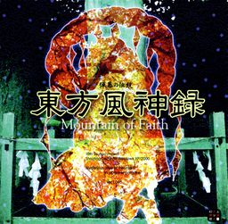

- Welcome to Touhou Wiki!
- Please register to edit. For assistance, check in with our Discord server or IRC channel.
Mountain of Faith
Mountain of Faith | |
|---|---|
|
 | |
| Developer | |
| Publisher | |
| Released |
Trial 0.01a: May 20, 2007 |
| Genre |
Vertical Danmaku Shooting Game |
| Gameplay |
Single-Player Story Mode |
| Platforms | |
| Requirements |
|
Touhou
Contents
Gameplay[edit]
In terms of gameplay, Mountain of Faith is a kind of "soft reboot". The engine, and much of the game's design and pacing, have been substantially overhauled. Playable characters are reduced to Reimu and Marisa once again, with both conventional weaponry as well as interesting new types. This and the immediate next game, Subterranean Animism, also feature a much simpler idea of player Spell Cards. While proper Spell Cards would return in Undefined Fantastic Object, that game still retains much of the design and pacing of these two games, and make a sort of trilogy in the same way that the Embodiment of Scarlet Devil, Perfect Cherry Blossom, and Imperishable Night did.
Mountain of Faith features two playable characters, each with three weapon types, but no personalized spell card bombs. Collecting power items results in an increase in "option" satellites around the character (for a total of four), which behave differently according to the character and weapon type. Each characters' options also fire bullets, and either shift position or freeze in place in focus-fire mode.
The scoring system is based on the Faith meter, which has a refillable gauge and a numeric value (minimum 50,000). As long as the gauge is not empty, the player's Faith value doesn't decrease, but the gauge slowly depletes unless the player is defeating enemies or collecting point items. Point items also partially refill the gauge, and Faith items increase the Faith value. The Faith value directly affects the point value of point items and spell card bonuses.
Name and Concept[edit]
ZUN took his time to start with Mountain of Faith. After he had finished and released Shoot the Bullet he was not sure if he should make another game and took a break. He waited some years to see if the fandom would die out. But the opposite happened, and he worked on Mountain of Faith anyway.
The theme for the game was "relationships between people", like the relationships with the gods.[citation needed] The story in the game is tied up with the Suwa mythology, which ZUN knows well. He used some of his own ideas in the story and let it tell in the game. Though, it is mostly seen in the later part of the game. Not all parts of the later part originate from the actual story and real locations. The Moriya Shrine, for example, is not derived from the Suwa Shrine as it would take too much research for ZUN to create it.
A year before its release, he answered in an interview that he started again from scratch for this game. This is to prevent the game from getting too complex by using the same system over and over again. [2]
Story[edit]
It is autumn in Gensokyo. A stranger comes to the Hakurei Shrine and says that the shrine should close for good. Reimu Hakurei won't let it happen so she or Marisa Kirisame goes to investigate the situation.
The heroine goes to the Youkai Mountain where she meets three gods and eventually Nitori Kawashiro, who says the kappa are troubled by a new god on the mountain. As she advances further, the heroine meets Aya Shameimaru, who was told to investigate the intruder. Aya is beaten and the heroine moves to the Moriya Shrine. Sanae Kochiya says that the new god, later shown to be Kanako Yasaka, is trying to collect faith. After Sanae is defeated, Kanako appears and explains her motives. She eventually makes peace with the kappa and tengu, who, in return, accept Kanako as the new god of the mountain, supplying her with faith.
In the Extra stage, the heroines meet the other god of the Moriya Shrine, Suwako Moriya, who is the shrine's true god. Suwako demands that they play with her in a danmaku battle, just like they've played with Sanae and Kanako.
Music[edit]
- Main article: Music
The game soundtrack of Mountain of Faith features 18 tracks, which all could be heard in the music room. When composing the themes, ZUN tried to add a Japanese feeling to the themes and he says the songs are particularly nostalgic, just like the game itself. The title screen music is an arranged version of "Theme of Eastern Story" (テーマ・オブ・イースタンストーリー) from Akyu's Untouched Score vol.5.
It is the first time a "Player's Score" (プレイヤーズスコア) theme (which shares a motif found in 神さびた古戦場 ～ Suwa Foughten Field, Kanako's theme) has been used in the Touhou Project. ZUN stated that he thought it would be too lonely if it was a silent at those moments, but somehow managed to make it even more lonely. The theme reappeared in Subterranean Animism, Undefined Fantastic Object, and an arranged version was used in Fairy Wars, Ten Desires and Double Dealing Character. This theme, however, cannot be played via the music room.
A few tracks were reused or arranged in later games and CD's. For Touhou Hisoutensoku, Sanae Kochiya's theme "Faith is for the Transient People" (信仰は儚き人間の為に) and the Extra stage theme "Tomorrow will be Special; Yesterday was Not" (明日ハレの日、ケの昨日) were both arranged by U2 Akiyama as Sanae's theme and Suwako Moriya's theme respectively. The original soundtrack for Touhou Hisoutenoku had both tracks. "Tomorrow will be Special; Yesterday was Not" is also featured in ZUN's 5.5 Music Collection album Unknown Flower, Mesmerizing Journey in a slightly different version. Hopeless Masquerade had an arrangement of Nitori Kawashiro's theme "Akutagawa Ryuunosuke's "Kappa" ~ Candid Friend" (芥川龍之介の河童 ～ Candid Friend), again by U2.
Aya's theme "Youkai Mountain ~ Mysterious Mountain" (妖怪の山 ～ Mysterious Mountain) appeared in Double Spoiler as the fifth photo theme and with only a few modifications, and was again re-used in Impossible Spell Card.
Press[edit]
| Attention: This section is a stub and it needs expanding with more information related to the section's topic. If you can add to it in any way, please do so. |
Gallery[edit]
Back Cover.
Game CD.
English patches[edit]
Touhou Community Reliant Automatic Patcher / THCRAP
- Community translations from the Touhou Patch Center wiki.
- Select lang_en during patching.
- Video walkthrough
- Also available as a pre-packaged standalone (not recommended).
These patches are a community translation based on Touhou Wiki and the English Touhou Patch Center Portal.
Visit the thpatch game page to find the specific patch contents for Mountain of Faith.
External links[edit]
Official[edit]
Unofficial[edit]
- Mountain of Faith scoreboard at royalflare
- Mountain of Faith scoreboard at Maidens of the Kaleidoscope
- Mountain of Faith scoreboard at shmups.system11.org
- Mountain of Faith scoreboard at Touhou.pl
- Mountain of Faith scoreboard at DoujinSTG.cn
Additional information[edit]
Notes[edit]
| |||||||||||||||||||||||||||||||||||||||||||||||||||||
| |||||||||||||||||||||||||||||||||||